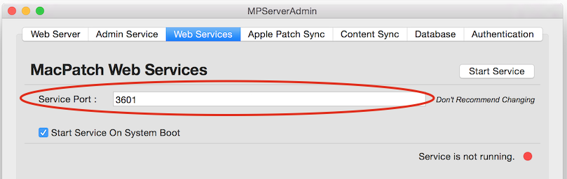

The MacPatch "Web Services" application is the main web service for all of the client communications. The default port for the application is 3601.
The default, and recommended configuration has all requests brokered via mod_proxy using the
Web Server on port 2600 using SSL.
Advanced
If the Service port is changed here the same must be set in the /Library/MacPatch/Server/Apache2/conf/extra/httpd-vhosts.conf file.
